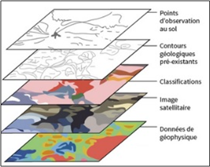
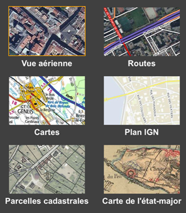

Carte matricielle
C’est une image point par point (des pixels). Quand on zoome, l’image est simplement agrandie.
Chapitre 5 – Cartographie et localisation
La cartographie a été révolutionnée par l’arrivée des cartes numériques, accessibles depuis les ordinateurs, les tablettes et les téléphones, bien plus souples à l’usage que les cartes papier.
Les cartes numériques rassemblent toutes les échelles et permettent de montrer différents aspects de la région visualisée sur une seule carte. Les algorithmes de recherche permettent de retrouver un lieu en donnant simplement son nom, et de calculer des itinéraires entre points selon des modes de transport variés.
Depuis le début de l’ère spatiale (fin des années 1950), les cartes ont radicalement changé de visage : les satellites offrent une vision globale de la planète avec une résolution fine. Les informations des cartes numériques proviennent de nombreuses sources : services géographiques des États, photos prises par des satellites, des avions ou des voitures, données fournies par les utilisateurs, etc.
L’acquisition et le traitement informatique de l’ensemble des données géographiques s’appellent la géomatique (contraction de « géographie » et « informatique »).

Les cartes numériques rassemblent toutes les échelles et permettent d’accéder à différents types de données selon la ou les couches d’information sélectionnées : vue aérienne, parcelles cadastrales, routes, cartes, statistiques…
Il existe deux grandes catégories de cartes numériques :
C’est une image point par point (des pixels). Quand on zoome, l’image est simplement agrandie.
Elle comporte des objets positionnés selon leurs coordonnées (routes, bâtiments, fleuves…). Quand on zoome, des détails apparaissent.
Les applications qui utilisent des cartes vectorielles (par exemple OpenStreetMap ou Géoportail) permettent généralement de sélectionner les catégories d’informations à afficher (lignes de transports, fleuves…). La carte est alors composée automatiquement à la demande.
Géoportail est un logiciel en ligne donnant accès à des services de recherche et de visualisation de données géographiques ou géolocalisées. L’image ci-dessous met en évidence les différentes couches de données.

Ce site de service public, ouvert en 2006, contient aussi de nombreuses données classées par thèmes : parcelles cadastrales, espaces protégés, zones de sismicité, quartiers prioritaires de la politique de la ville…
Superficie actuelle estimée (m²) :
Superficie estimée en 1950-1965 (m²) :
Compare les deux valeurs : que constates-tu ?